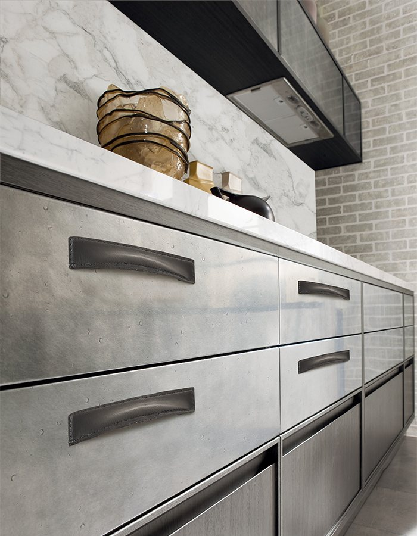
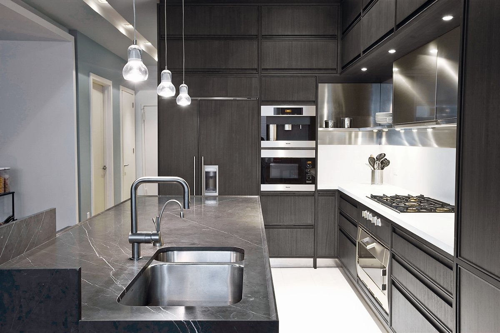
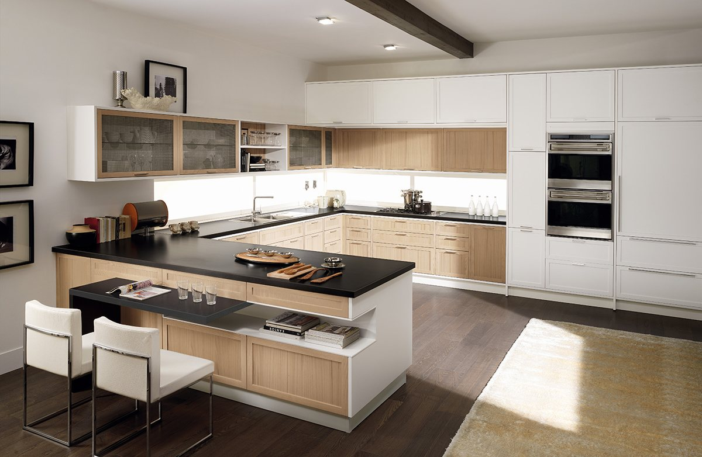
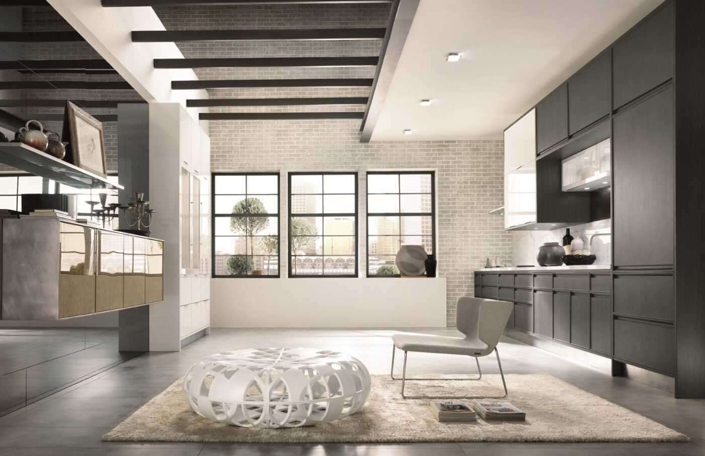
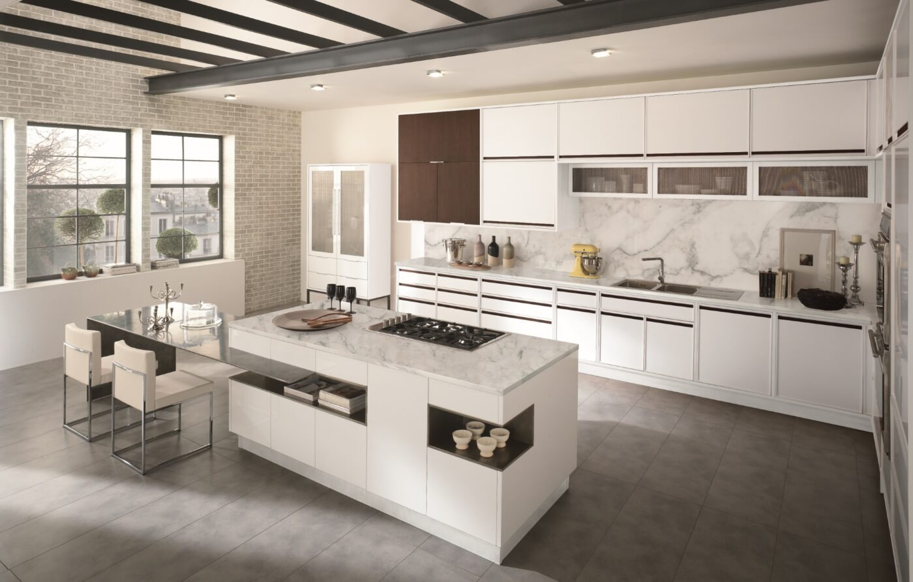
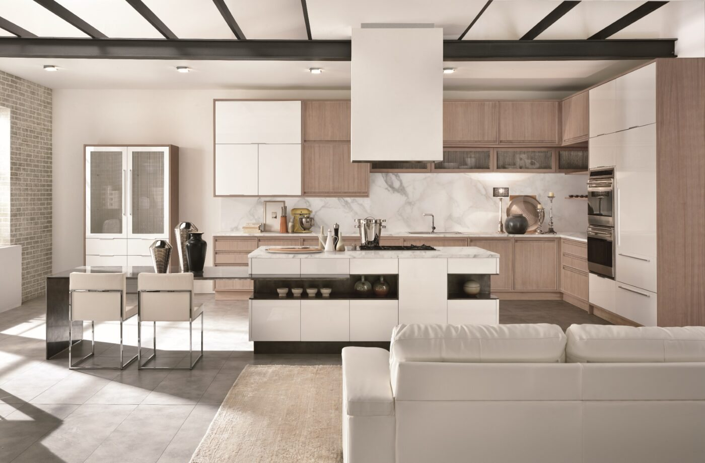
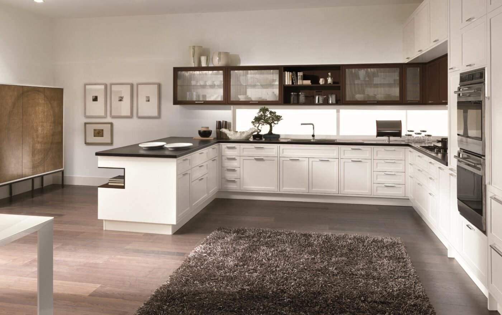

Aster Cucine
Кухня Timeline
Кухня с фасадами, утопленными в рамку корпуса. Разработана вместе с бюро Workshop/APD.

Вкладные фасады и патинированные отделки
Timeline разработана Aster Cucine вместе с американским бюро Workshop/APD. Дверцы установлены внутри рамки корпуса. На стыке остаётся видимый контур, который подчёркивает деление шкафов и требует точной подгонки зазоров.
- Дуб с выбеленными порами
- В палитре используется отделка ceruse. Она выделяет поры дуба и подчёркивает его рисунок.
- Металл, стекло и сетка
- Workshop/APD включили в коллекцию патинированный металл, состаренное зеркальное стекло и металлическую сетку по мотивам французских буфетов.
- Планировка
- В галерее есть композиции с отдельным островом и вариант с полуостровом. Открытые торцевые ниши связывают кухню с гостиной.

Композиции и детали






Фото и описание по материалам Aster Cucine.
Обсудить проект кухни
Подберём конфигурацию и отделки для Вашего проекта.